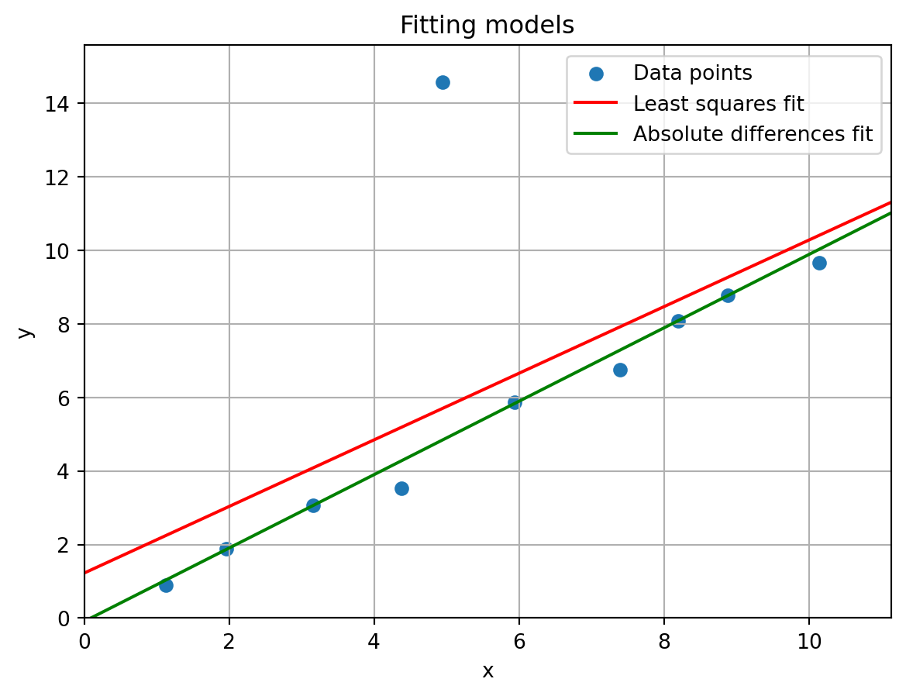
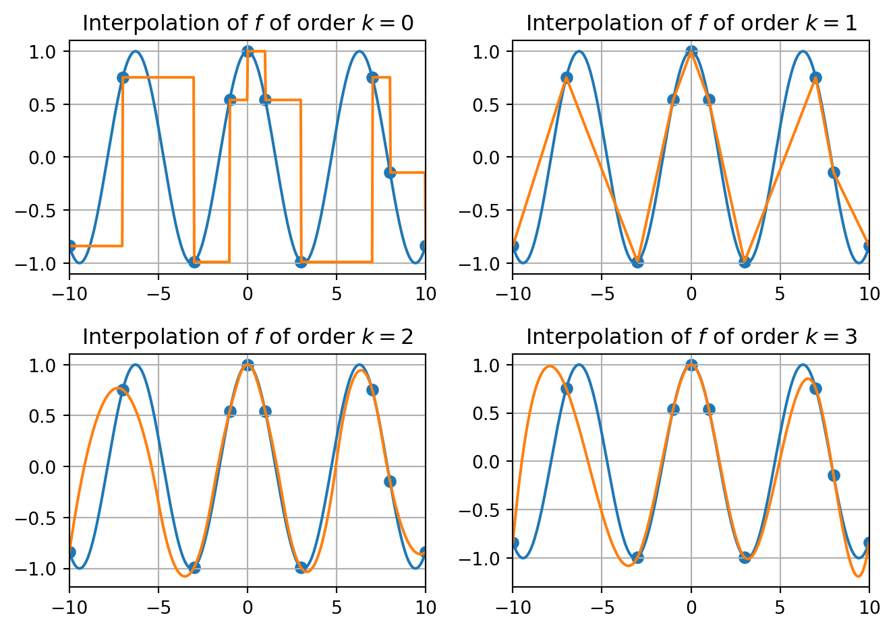

import numpy as np
import scipy.optimize as optimize
import scipy.interpolate as interpolate
import scipy.stats # Could import this as, e.g., stats as well
import matplotlib.pyplot as plt
# Display numerical values in NumPy arrays only up to three decimals,
# and suppress scientific notation
np.set_printoptions(precision=3, suppress=True)Exercises Lecture 7 (Chapter 9)
Make sure to import Numpy, SciPy and Matplotlib to be able to complete all the exercises.
Disclaimer: For some questions where random numbers are involved, it might happen that your output obtained from running the test input is different than the output given.
This can happen if, despite the use of a random seed, you generate random numbers in a different way than was done in the solution by the teacher. This does not necessarily mean that your answer is wrong. If you are unsure about your solution, ask the teacher.
As an example, you can generate a normally distributed random number with mean 0 and standard deviation 1 withnp.random.normal(0,1)ornp.random.randn(), but these numbers will usually be different. Also, the shape of an array that you fill with random numbers can have an influence on the outcome: The commandnp.random.randn(3,4)does not yield the same 3 \times 4 array asnp.random.randn(4,3).T.
Question 1
In this question, we will compute a coefficient that can be used to give an indication whether two arrays of samples have the same median or not. Do not use for-loops in this exercise.
Define a function
compare_median()that takes as inputs two one-dimensional arrays x and y of equal size. It should compute the sample medians s_x and s_y of x and y, respectively, and output the number |s_x - s_y|.
Test your function on two randomly generated arrays x and y with n = 50 normally distributed samples in each. The array x has \mu = 0 and \sigma = 1; and y has \mu = 0 and \sigma = 2. Take random Numpy seed s = 3. For the given random seed, the output should be \approx 0.66.
The closer the number is to 0, the more likely it is that the sample arrays come from a distribution with the same median, which is indeed the case for us.Vectorize your function so that it can take as input a two-dimensional k \times n array, and outputs a matrix M = (m_{ij}) whose entry m_{ij} has the output of the function
compare_median()applied to the data on rows i and j, for all i,j =0 ,\dots,k-1.
Hint: If you substract a row (k,)-shaped array from a (k,1)-shaped column array, then the resulting two-dimensional array contains all the pairwise differences of the two arrays.Create a function
unif_samplesthat takes as input two one-dimensional arrays a = [a_0,\dots,a_{m-1}] and b = [b_0,\dots,b_{m-1}], and a number n. It should output a two-dimensional m \times n array where row i contains n samples from the (continuous) uniform distribution on [a_i,b_i] for i = 0,\dots,m-1.
Hint: Have a look at Chapter 8.2.1 how to generate samples from different distributions from the same family and a look at the documentation here to check out the keyword arguments ofnp.random.uniform.
Test your functions from b) and c) by applying them to the test input below.
# Fix random seed
s = 3
np.random.seed(s)
# Input parameters
a = [1,4,0,5]
b = [3,5,4,9]
n = 100
# Testing function
samples = unif_samples(a,b,n)
print(compare_median(samples)) [[0. 2.48 0.089 4.71 ]
[2.48 0. 2.569 2.23 ]
[0.089 2.569 0. 4.799]
[4.71 2.23 4.799 0. ]]Question 2
Consider a multivariate linear regression model of the form y_i = f(x_i,\beta) + \epsilon_i where (x_i,y_i) are known data points with x_i = [x_{i0},\dots,x_{i(n-1)}] \in \mathbb{R}^{n} and y_i \in \mathbb{R}. The variables to be fitted are contained in the array \beta = [\alpha,\beta_0,\dots,\beta_{n-1}] \in \mathbb{R}^{n+1}. The function f is given by f(x_i,\beta) = \alpha + \beta_0x_{i0} + \dots + \beta_{n-1}x_{i(n-1)}.
- Write a function
linear_regressionthat takes as input m data points (x_i,y_i), in the form of a two-dimensional array x that has the x_i on its rows, and a one-dimensional array y = [y_0,\dots,y_{m-1}]. It should output
- The fitted vector \beta on this data using
least_squares()with initial guess the all-ones array [1,1,\dots,1]. - The sum of the squared errors \sum_{i=0}^{m-1} (y_i - f(x_i,\beta))^2.
Test your function on the following input.
x = np.array([
[ 1.012, 1.008, 0.996, 0.998],
[ 1.992, 1.996, 2.015, 1.995],
[ 3.007, 2.996, 2.988, 2.998],
[ 3.991, 4.02 , 4.002, 3.979],
[ 5.004, 4.998, 4.996, 4.988],
[ 5.988, 6. , 6.011, 6.005],
[ 7. , 7. , 6.994, 7.011],
[ 8.002, 8.011, 8.002, 7.997],
[ 8.984, 9.022, 8.992, 9.02 ],
[ 9.99 , 9.99 , 9.999, 10.009]])
y = np.array([11.014, 20.045, 28.928, 38.03 , 46.977,
56.022, 64.983, 74.038, 83.024, 91.977])
# Test your function on the x and y as above
beta_fit, error = linear_regression(x,y)
# Print parameters
print("Fitted parameters:", beta_fit)
# Print error
print("Sum of squares error:",error)Fitted parameters: [1.99 1.258 2.584 4.449 0.71 ]
Sum of squares error: 0.0005592236239135366Instead of minimizing the sum of squares we will next search for coefficients that minimize the sum of the absolute differences for m given data points. That is, we want find an array \beta that minimizes the expression \min_{\beta} \sum_{i=0}^{m-1} |y_i - f(x_i,\beta)|. with f as above.
Write a function
abs_regression()that takes as input data points (x_i,y_i), as in part a), and outputs the fitted array \beta that solves the minimization problem above, as well as the sum of the absolute errors for the optimal \beta. Useoptimize.minimize()in your solution with again the all-ones vector as initial guess.Test your functions in parts a) and b) on the input data below (that contains one “outlier”).
# x_i data
x = np.array([ 1.124, 1.965, 3.162, 4.381, 4.941,
5.941, 7.395, 8.192, 8.883, 10.136])
x = x[:,None] # x_i-data has to be inputted per row
# y_i data
y = np.array([0.884, 1.884, 3.06 , 3.522, 14.569, #Outlier: 14.569 = 4.569 + 10
5.859, 6.747, 8.079, 8.773, 9.647])
# Fit sums of squares error
beta_squares, error_squares = linear_regression(x,y)
print("Sum of squares fit gives beta=",
beta_squares, "with error", error_squares)
# Fit sum of differences error
beta_abs, error_abs = abs_regression(x,y)
print("Sum of absolute differences fit gives beta=",
beta_abs, "with error", error_abs)Sum of squares fit gives beta= [1.223 0.905] with error 88.69264159225709
Sum of absolute differences fit gives beta= [-0.091 0.997] with error 11.590128506427407- Plot the fitted lines in a figure together with the data points. The figure should look like this:

Looking at the figure, one might argue that if we ignore the outlier close to (4.941,14.569), the line found by minimizing the absolute differences of the errors fits the remaining data better than the line found by minimizing the sum of squared errors. This is typically the case when data contains outliers.
Question 3
In this question we will consider Lasso regression, where the goal is to fit the so-called Lasso error
\min_{\beta} \frac{1}{m}\sum_{i=0}^{m-1} (y_i - f(x_i,\beta))^2 + \gamma \sum_{i=0}^{k-1} |\beta_i|.
with \gamma\geq 0 a given constant and f(x_i,\beta) = \beta_0x_{i0} + \dots + \beta_{n-1}x_{i(n-1)}. This is almost the same function as in Question 2, but without the constant term \alpha. The error objective above is more likely to set some \beta_i close to zero than normal least squares regresssion (that only minimizes the first term in the formula above).
This can be useful if you want to find the important features in your data set. Let us first generate some synthetic data to explain what is meant with “important” features. Note that in the code below each row x_i = [x_{i0}, x_{i1}, x_{i2}, x_{i3}, x_{i4}] in the array x is considered a data point five elements, each representing a feature.
# Fix random seed
np.random.seed(3)
# Function f
def f(x,beta):
# Input: - x is two-dimensional array with data on the rows
# - beta is array of coefficients to be fitted
return x @ beta
# True beta used for data generation
beta_true = np.array([2,1,0,3,0])
m = 10; # number of samples
n = np.size(beta_true) # number of features
# Generation of data array with
# points close to (1,...,1), (2,...,2), .., (m,...,m)
x = np.arange(1,m+1)
x = np.repeat(x,repeats=n).reshape(m,n)
x = x + np.random.randn(m,n)
# y-data
y = f(x,beta_true) + np.random.randn(m)Above, we generate synthetic data where the “true” values of the parameters to be fitted are \beta = [\beta_0,\dots,\beta_4] = [2,1,0,3,0]. Note that \beta_2 = \beta_4 = 0, which means that the second and fourth feature essentially play no role in the data. The synthetic data is created based on this vector \beta with some random noise added to it, which means that once we do the fitting we will not find back exactly the “true” values. Make sure you understand this concept.
Write a function
lasso_regression()that takes as input a two-dimensional array x whose rows represent the data x_i for 0 = 1,\dots,m-1, a one-dimensional array y = [y_0,\dots,y_{m-1}], and a constant \gamma \geq 0. It should output the fitted array \beta that solves the minimization problem above, as well as the Lasso error. Useoptimize.minimize()in your solution with again the all-ones vector as initial guess.Test your function on the synthetic data generated above for \gamma \in \{0, 0.1, 0.2, \dots, 0.9\}, and output a 10 \times 5 array with the values of the fitted \beta for \gamma_i = 0.1 \cdot i on row i. You may use a for-loop here.
Your output should look like below.
[[ 2.42 1.413 0.49 3.445 -1.85 ]
[ 2.329 1.409 0.382 3.372 -1.578]
[ 2.238 1.404 0.275 3.299 -1.306]
[ 2.147 1.4 0.167 3.226 -1.034]
[ 2.056 1.396 0.06 3.153 -0.762]
[ 1.969 1.381 -0. 3.079 -0.531]
[ 1.861 1.378 -0. 2.991 -0.339]
[ 1.806 1.325 -0. 2.932 -0.17 ]
[ 1.735 1.293 -0. 2.863 -0.001]
[ 1.72 1.308 -0. 2.858 -0. ]]As \gamma increases we see that \beta_2, \beta_4 \rightarrow 0. Be aware though, that if you choose \gamma too large, then other \beta_i values might also converge to 0. As an extreme case, if \gamma = 1000, then all coefficients will be 0. Do you understand why?
beta_fit, error_fit = lasso_regression(x,y,1000)
print(beta_fit)[-0. -0. -0. 0. 0.]Deciding which \gamma to use is called hyperparameter tuning. This topic plays an important role not only in regression problems, but more broadly in data science and machine learning.
Question 4
Reproduce the figure below, that displays interpolation of the function f(x) = \cos(x) using piecewise polynomials of degrees k = 0,1,2,3 on the intervals between the given data points. The x-value of the data points (the dots) are [-10, -7, -3, -1, 0, 1, 3, 7, 8, 10].

Question 5
In this exercise we will implement the maximum log-likelihood estimation procedure for a normal distribution with unknown mean \mu and standard deviation \sigma. Recall that the idea of maximum log-likelihood estimation is to find, based on an array of samples x = [x_0,\dots,x_{n-1}], parameters \mu and \sigma that solve the problem \max_{\mu,\sigma} L(\mu,\sigma,x) = \sum_{i=0}^{n-1} \log(f(x_i,\mu,\sigma)) where f(x,\mu,\sigma) is the probability density function of the normal distribution with mean \mu and standard deviation \sigma. The idea is that the parameters maximizing the function above are the ones that are most likely to yield the samples in the array x.
Write a function norm_likelihood() that takes as input a one-dimensional array x = [x_0,\dots,x_{n-1}] of samples, and outputs parameters \mu and \sigma that maximize the function L above for the given x. Use the optimize.minimize() method for optimizing L and take as initial guess the mean and standard deviation of the vector x.
Test your function on the input below.
# Fix random seed
np.random.seed(3)
# Generate some samples
x = np.random.normal(loc=3,scale=5,size=10) # 10 samples
# Log-likelihood estimation
y = norm_likelihood(x)
print("Solution found by maximum likelihood estimation:",y)Solution found by maximum likelihood estimation: [2.298 4.332]The (rounded) solution found is the same as the one found by the fit() function.
# Comparison with fit()
y = scipy.stats.norm.fit(x)
print("Solution found by fit() function:",y)Solution found by fit() function: (np.float64(2.2976087746123506), np.float64(4.332072061724699))